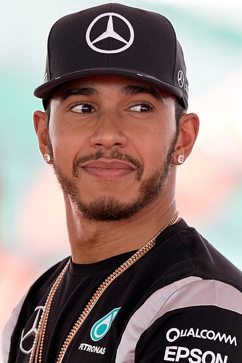

MintNo Middle NameChocochip
|
(a-b)2 = a2-2ab+b2
2H2+O2 = 2H2O2
#include <stdio.h>
int main(void){
printf("Account Number: 23BCE1476");
printf("Balance: ₹1000000");
}

Formula One, commonly abbreviated as F1, is the highest class of international racing for open-wheel single-seater formula racing cars sanctioned by the Fédération Internationale de l'Automobile (FIA). The FIA Formula One World Championship has been one of the world's premier forms of motorsport since its inaugural running in 1950. The word formula in the name refers to the set of rules all participants' cars must follow. A Formula One season consists of a series of races, known as Grands Prix. Grands Prix take place in multiple countries and continents on either purpose-built circuits or closed roads.
A point-system is used at Grands Prix to determine two annual World Championships: one for the drivers, and one for the constructors—now synonymous with teams. Each driver must hold a valid Super Licence, the highest class of racing licence the FIA issues, and the races must be held on Grade One tracks, the highest grade rating the FIA issues for tracks.
This is the detailed information.